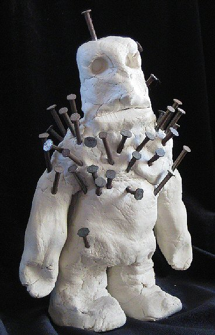

Sunday, January the 18th, 2009
back to: title, date or indexes

Here is a photograph of Mr Key's mud idol. As is de rigueur with mud idols, nails have been driven into it. In this case, each nail represents the immortal soul of a badger, or of an otter. During secret ceremonies, Mr Key prostrates himself on his stomach before the mud idol and, in guttural ululations, beseeches it to pulverise his foes using the maleficent Gaar, or energy, of the badgers and otters impacted within its mudness.